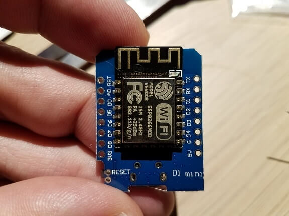

Congratulations for obtaining a Personal Pocket Cloud device!

Essentially a small computer, the module is capable of running user-written applications written in
MicroPython,
a remarkably complete implementation of
Python 3. Such applications can...
- Connect to a standard 802.11 b/g/n WiFi network
- Create a standalone WiFi network that phones and computers can connect to
- Sense the status of 10 digital and 1 analog inputs
- Output digital and PWM signals on 9 pins
- Communicate with a host of device types and sensors
Here are some examples of what can be done with just the base Personal Pocket Cloud:
- Set it up as an wifi access point and serve content from the internal flash memory.
- Connect it to an existing wifi network to push and retrieve content from network and Internet resources.
- Scan and analyze surrounding networks.
The base module can also be expanded by connecting other devices called "shields". These small boards stack on top
of the module and allow you to do many other things:
- Build a simple weather station
- Build a digital clock
- Set it up as an wifi access point and serve files from a Web or FTP server.
- Manipulate physical inputs and outputs over the network
- Scroll messages and text across a matrix LED display
- and much, much more...